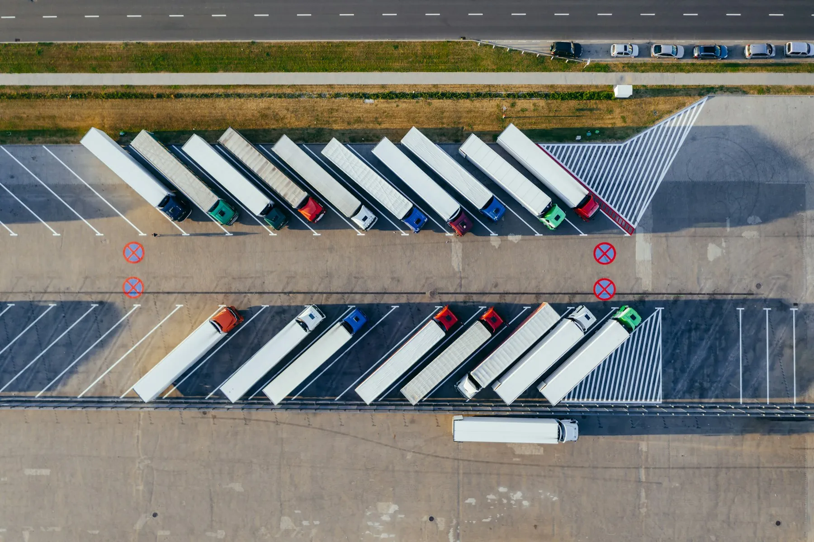

Overstocks cost 3.2% in lost revenue
Retailers have been struggling with the battle of over and understocking since the very first store was established.
Out-of-stock items cost roughly 4%
That’s a total of $253 billion worth of losses from the bottom line.
Keep your inventory at optimal levels
So what can you do to minimize these losses and keep your inventory at optimal levels?
Navigating Inventory Logistics

Chapter one
It all begins with stock forecasting
One word: forecasting
It probably goes without saying that regardless of whether you run an eCommerce business or a brick and mortar store, inventory forecasting can make or break your profits. Too little inventory and you lose out on revenue; too much and you have to deal with rising holding costs and risks, unable to use that capital for other crucial areas of your business. So how do you straddle that fine line that optimizes inventory while managing cash flow?
In the context of inventory management, the goal is to strike that not-too-hot, not-too-cold Goldilocks zone. Stock forecasting is all about holding just the right amount of inventory so that you’re not overstocked nor are you understocked. For most medium-sized businesses, you’ll have to begin by establishing whether your inventory turnover is within industry benchmarks.
Chapter two
Replenishment, replenishment, replenishment
Let’s say…
Formulas are good and well — but perhaps the best way to demonstrate them in practice is by using an example. Imagine you own a mid-sized eCommerce business in Canada and you sell watches manufactured in China.
Let’s start by totalling the lead time: a couple of days to pick and pack the watches, four days to ship the goods to the port, 30 days for the watches to ship to Canada, another week in customs, then five days to travel to your warehouse.
Let’s assume that your company sells 600 watches per month. If you divide by the number of days in a month (let’s call it an even 30), you’ll arrive at the average number of watches you’d sell in a day. In this case, it’s 20.
Chapter three
How to avoid overstocking
and understocking
Reduce any inventory that’s no longer relevant to the market
The best practice when it comes to making sure your stock remains relevant is to use data to predict when an item is about to become obsolete in a market. This can include taking into account when a product is going to be replaced or overtaken by a new or competing version.
A product’s life cycle needs to be monitored regularly — monthly if possible — to keep track of fluctuations in demand. Once you have a demand pattern mapped out, you’ll be less likely to overstock on an item that’s about to be removed from the shelf.
Offload overstocked items
One thing you can do if you find yourself with plenty of stock for an item is to reduce the price, thus offloading it. While you’ll experience a reduction in profits in the short term, the long term benefit of unclogging your warehouse facility means an overall reduction in carrying costs, while also freeing up space to store products that are more profitable.
What’s inside
Six chapters for founders navigating inventory logistics
Every 40 seconds, a product enters
the logistics system.